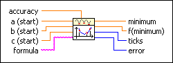

Golden Section 1D VI
Owning Palette: Optimization VIs
Requires: Full Development System
Determines a local minimum of a given 1D function with the help of a bracketing of the minimum. The Golden Section Search method is used.

 Add to the block diagram Add to the block diagram |
 Find on the palette Find on the palette |